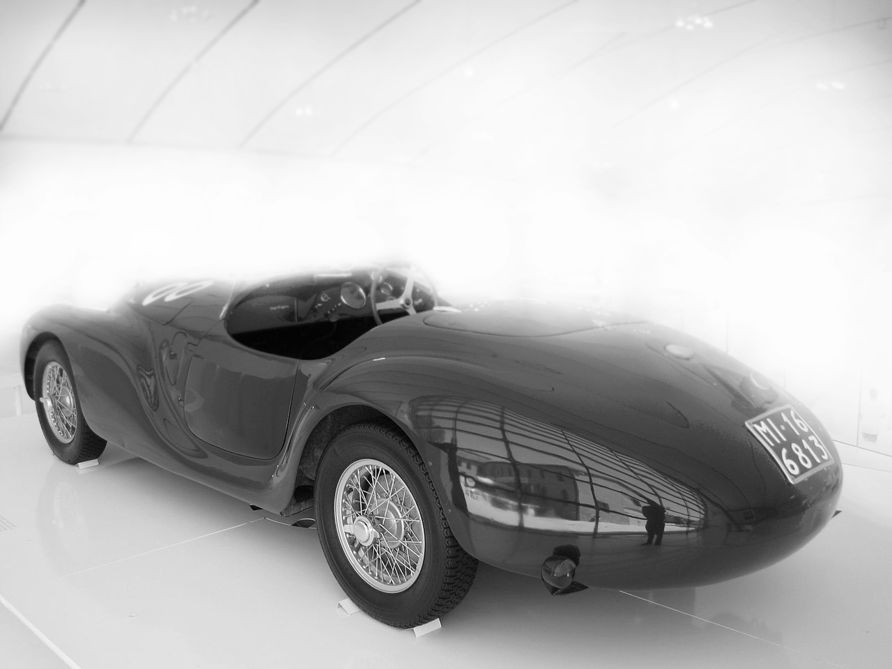

History
Ferrari was established by Enzo Ferrari in 1929 under the name of Scuderia Ferrari.The beginning of Ferrari journey was not in creating road cars as many would believe. Ferrari beginnings involved modifying manufactured cars to suit them for racing. Ferrari went through another transition when Enzo Ferrari established Auto Avio Costruzioni (Ferrari) in 1939 which focuses on producing machine tools and aircraft parts. In 1940 Ferrari developed the Avio Costruzioni 815 as their first original vehicle.
Model Uno
Powered by a 1.5 L V12 engine, the 125 sport managed to win its first world title in 1952 with the help of Alberto. The vehicle has 118HP @ 6,800 RPM, Max 130 MPH, 92lb-ft (135.5Nm), and reaches 0-60mph (96.6 kph) in 10.8 seconds. The success of the 125 sport provided a name for Avio Construzioni (Ferrari) which allowed then to continue developing newer models and overall growth of the company. Eventually the company was renamed Avio Costruzioni to Ferrari. In my personal opinion I think it’s a way better fit to an elegantly monstrous brand and those are two words in which are difficult to put together.